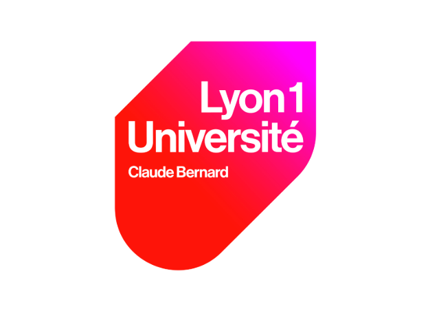
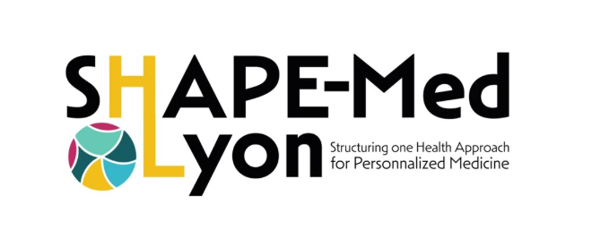
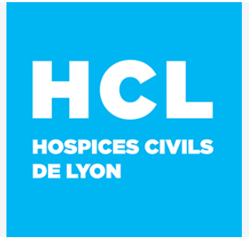

01 / 04 · CARTE
Une carte communale interactive
Chaque variable se cartographie à l'échelle de la commune, année par année, avec le choix de la classification et des filtres pour isoler un territoire ou une tranche de valeurs.



Exposition territoriale et caractéristiques socio-économiques des patients atteints de maladies chroniques du foie pouvant évoluer vers le carcinome hépatocellulaire. France métropolitaine, échelle communale × année, 2017-2024.
Chaque variable se cartographie à l'échelle de la commune, année par année, avec le choix de la classification et des filtres pour isoler un territoire ou une tranche de valeurs.
À côté de la carte : médiane, moyenne, minimum et maximum de la variable affichée, leur évolution année par année, et un mode de comparaison entre deux régions.
Posez votre question en langage courant : l'assistant vous oriente dans le catalogue des variables et retrouve les communes par leur nom — y compris hors ligne.
Chaque variable a sa fiche — source, millésimes, limites connues, secret statistique — et la carte complète s'exporte en image, légende comprise.